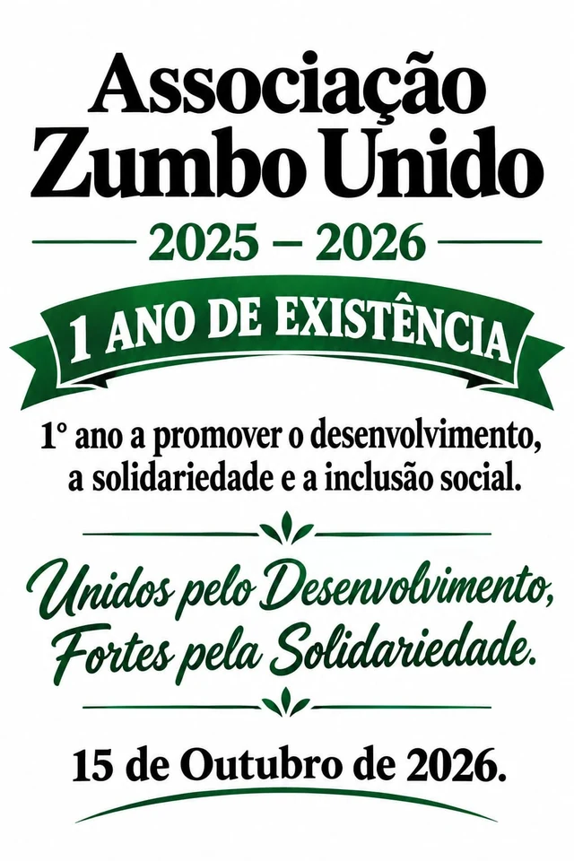

Catálogo institucional
Projectos e iniciativas
O catálogo apresenta as iniciativas autorizadas para divulgação pela associação.
Notícias institucionais
ANUDSE-ZU — Primeiro aniversário (2025–2026)
Material comemorativo do primeiro aniversário da Associação Zumbo Unido e do seu compromisso com o desenvolvimento, a solidariedade e a inclusão social.
O cartaz indica e apresenta o lema Unidos pelo Desenvolvimento, Fortes pela Solidariedade.


Iniciativas publicadas
Catálogo de projectos
Ainda não há projectos publicados
As fichas ficarão disponíveis após autorização. Até lá, consulte as áreas de actuação e os exemplos de iniciativas possíveis.
Participe
Proponha uma colaboração
Veja como preparar uma proposta de parceria ligada aos fins estatutários da associação.